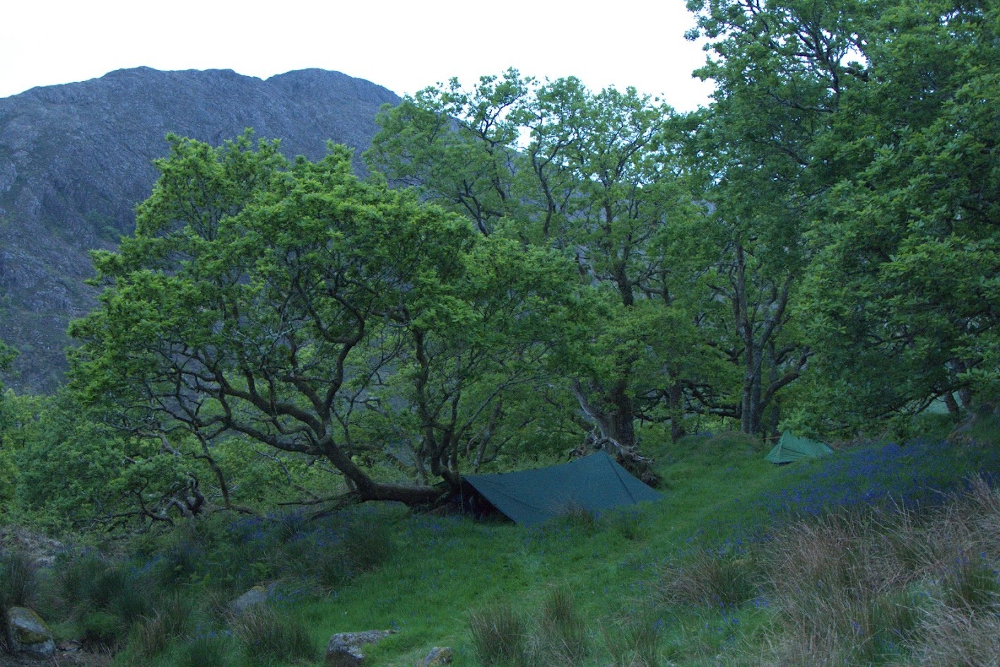
May 7–10, 2026
Early-season Snowdonia, spring in the secret places. The summer yet to be.
Step away from the noise. Walk in stillness. Rediscover purpose.
The following day we will rise early and give instructions on how to deepen your practice of meditation and bring that awareness into movement as we walk. This first day will usually involve a long challenging hike, often summiting a major mountain peak, interspersed with periods of silence and some seated meditation and reflection.
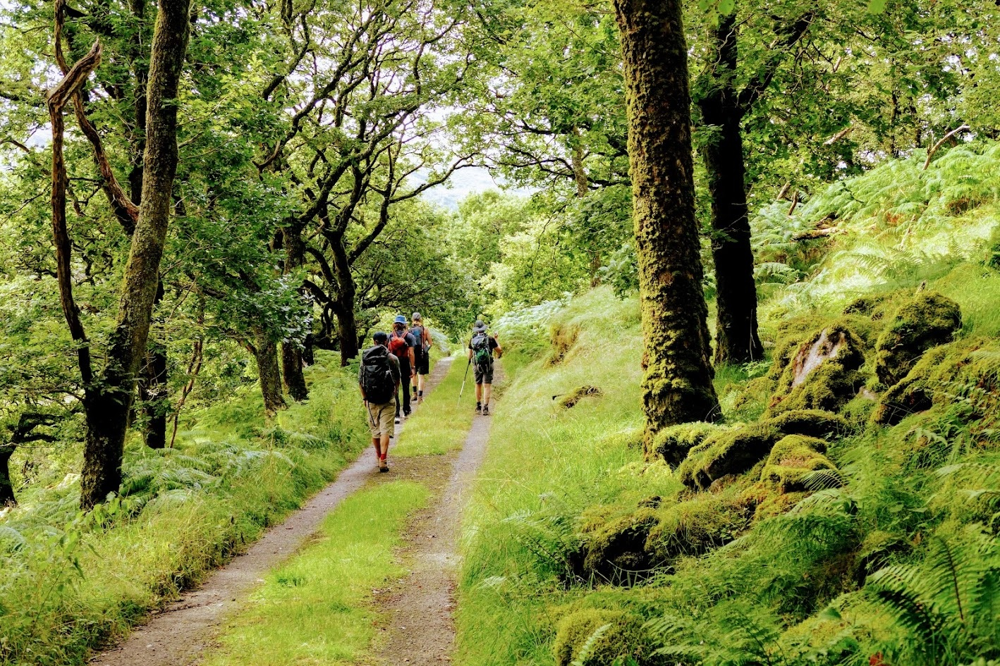
Day two we will walk again, but this time as well as deepening our meditative awareness we will use the time to develop and connect with our personal quest. After lunch we will fast and hike to a remote mountain top or woodland and spend the night alone with only a bivvy bag to separate us from the elements.
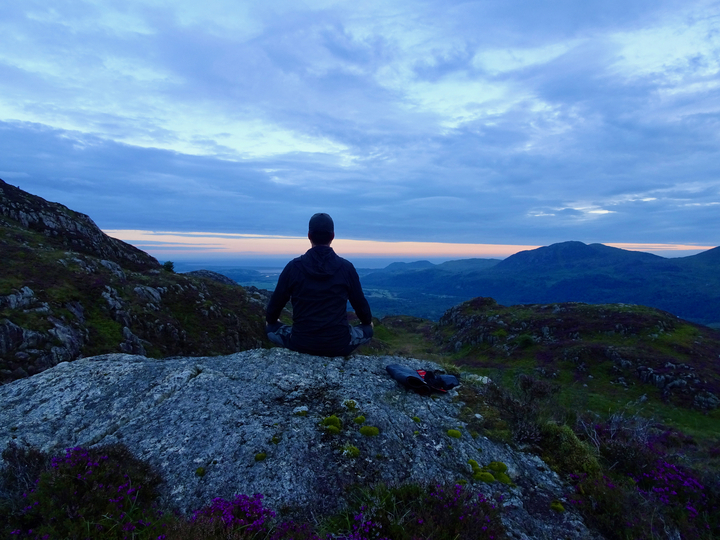
Day three – after a night alone in the wilderness we gather for a shorter, mainly silent walk back to base camp where we will break our fast and come together to reflect on the weekend, discussing our experiences and how we might integrate them back into our daily lives.
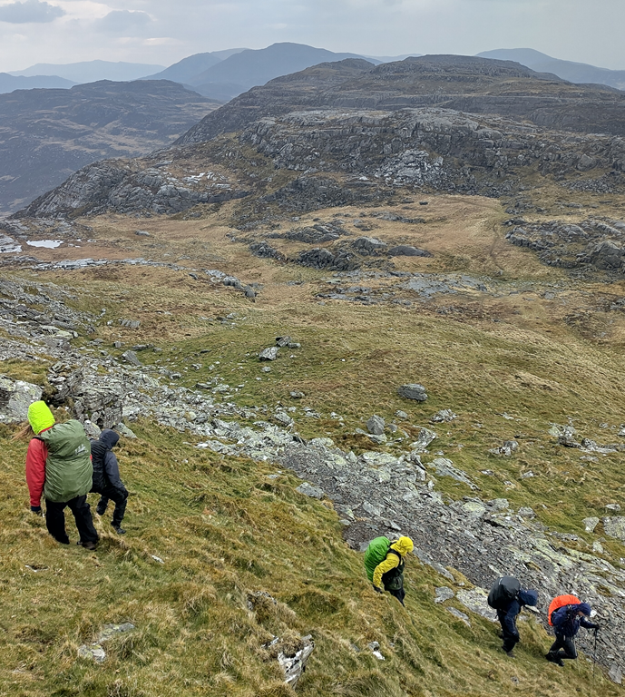
Alongside a rotating support team of cooks and meditation teachers you'll be led by two qualified mountain leaders, Amalavajra, an ordained Buddhist from the West London Buddhist Centre, and Francis Parry Roberts, who lives and works in North Wales.
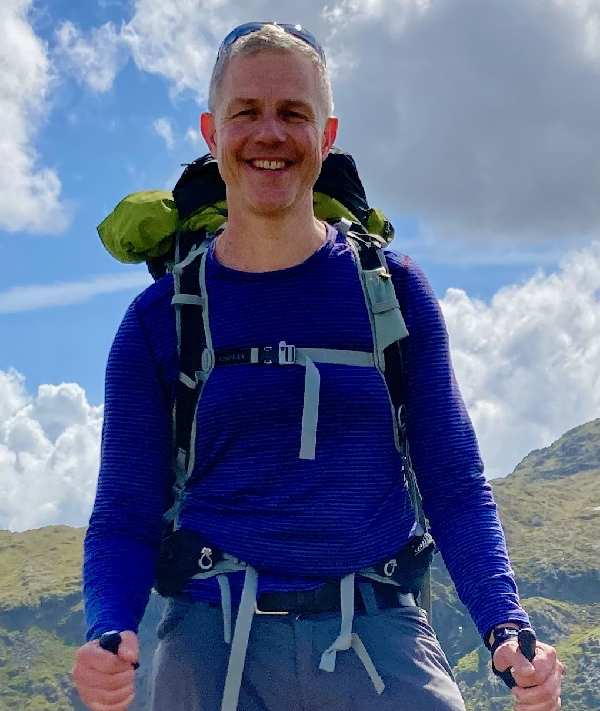
Amalavajra
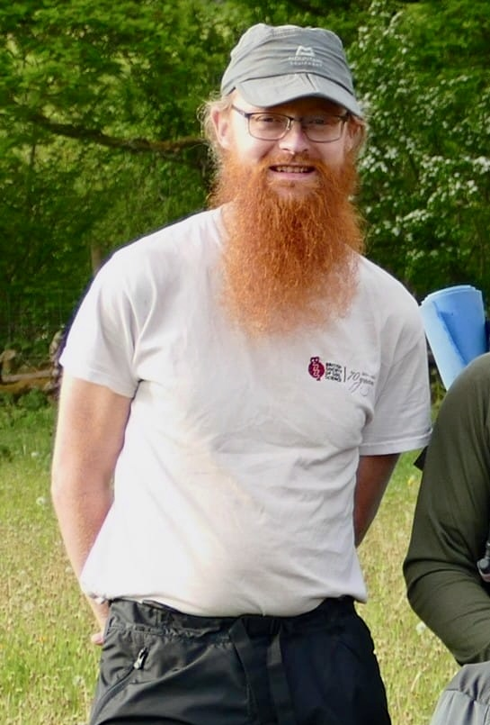
Francis
Groups are small, places limited. Please get in touch here or on social media, or book directly using the form below.

Early-season Snowdonia, spring in the secret places. The summer yet to be.
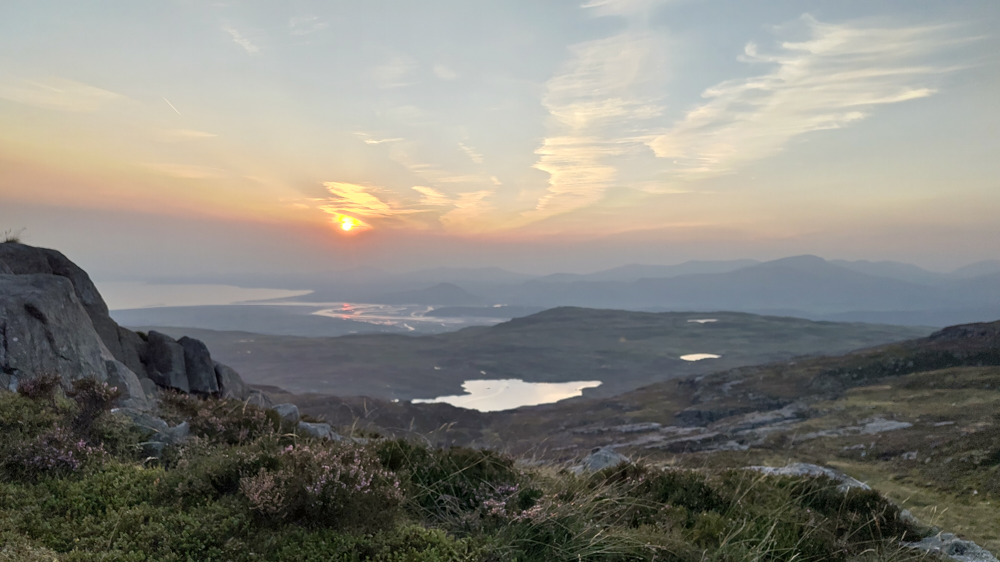
Longer days for walking, deep silence, the high Welsh mountains calling.
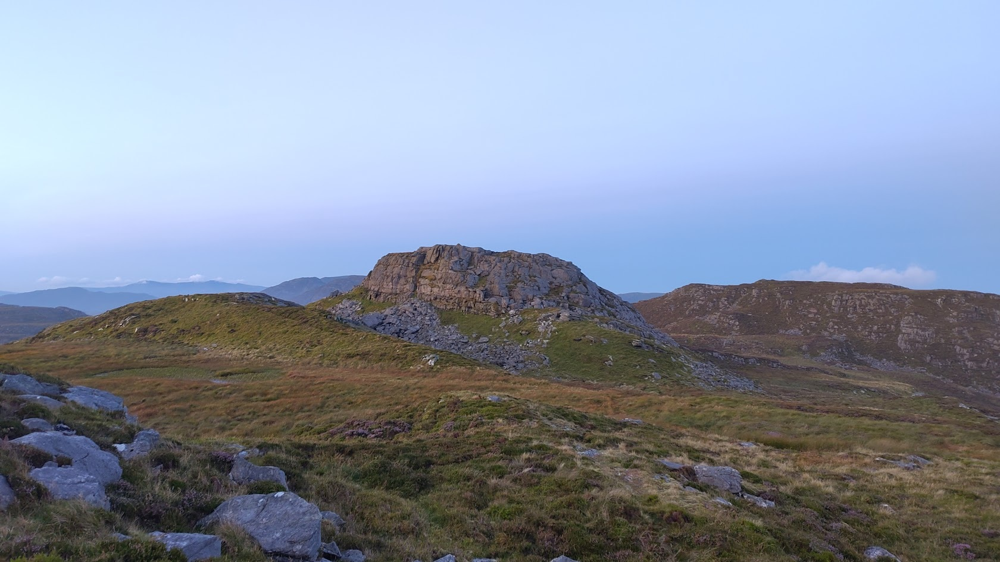
Autumn comes, a reflective pace, space to integrate the year.
We ask a £100 deposit on booking to make sure we don’t lose money ourselves, and the rest — following the age-old Buddhist tradition — is up to you. A further contribution covers the basic cost of running the expedition and a larger donation helps us offer bursary places.
Scenes from previous Trackless weekends. UNDER DEVELOPMENT more images, no repeats, text testimonials, maybe embed video?
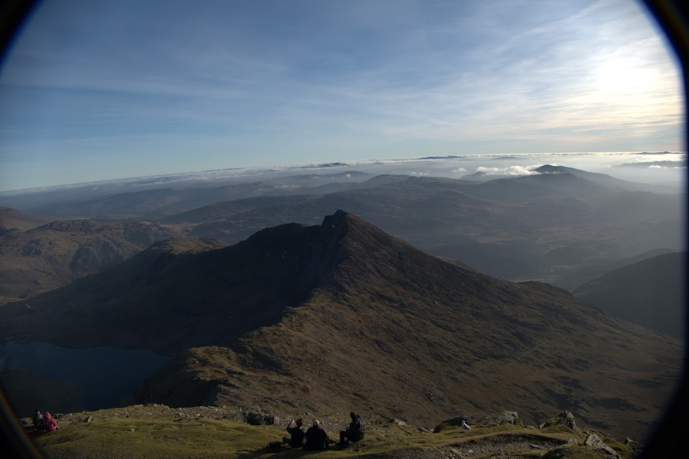
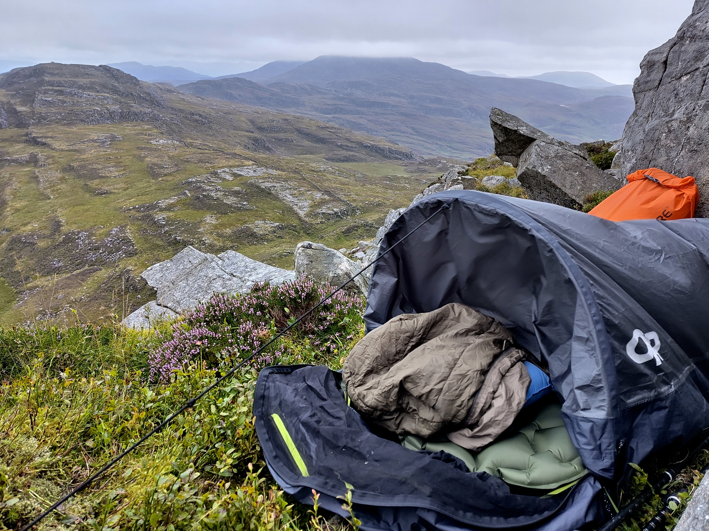
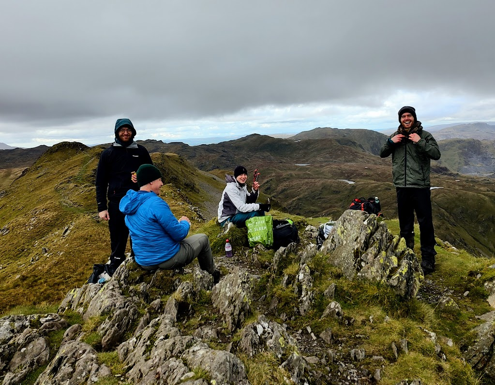

Meditative Expeditions

This event is challenging, physically and mentally — it’s supposed to be. Immersion in nature, exposure to the elements and overcoming fear and other negative mental states are part of what the Trackless experience is. You should be able to walk about 12–15 miles a day carrying a backpack with everything you need. We will make a dynamic assessment of the group and respond accordingly.
A full kit list is supplied on enquiry and much of the gear is available on loan, or we can purchase for you with discounts from local stores.
Think of it as living like a monk for three days. Trackless is inspired by the life and teachings of the Buddha and his immediate disciples who were essentially communities of semi-itinerant monks and nuns. Here we’re creating a clear, contained men’s space for this work.
‘Trackless’ is an epithet of the Buddha, with a rich range of interpretations and associations including the idea that he leaves no karmic trail, cannot be tracked by evil, and there is no basis, or footing, for suffering in his actions. Ultimately he encapsulates the ideal to which Buddhists aspire: a life lived with creative, compassionate energy; rather than one reacted to out of habit, pain and fear.
We ask a £100 deposit on booking. The rest is on a donation basis, following the Buddhist tradition. A further amount covers basic costs, and a higher donation helps us offer some bursary places — please get in touch if that applies to you.
Tell us which date you’re interested in and we’ll get back to you with joining details, kit list and travel info.
We use website analytics to understand how people use this site and improve the experience. Please add a full privacy policy and cookie consent solution before public launch if your organisation requires one.
This website may use analytics tools to understand visits, page views, and general engagement so we can improve the site and our communications.
If you contact us through a form or booking system, the information you provide will only be used for responding to your enquiry or managing your booking, in line with the policies of the service used.
A full privacy policy and any required cookie consent tools should be added before public launch.